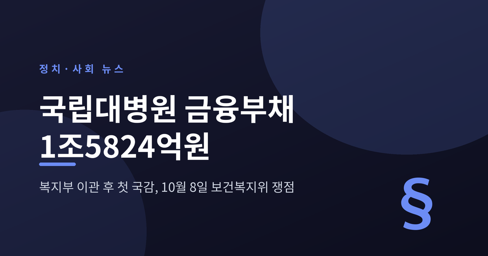
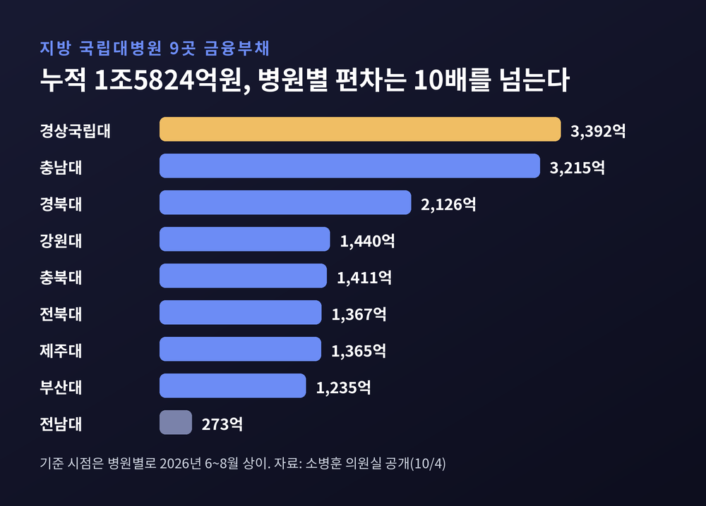
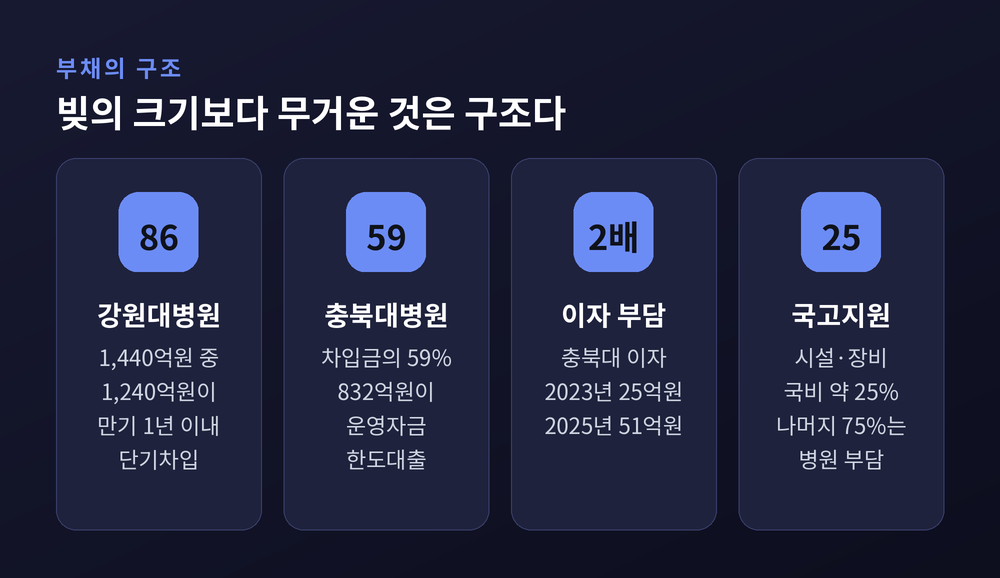
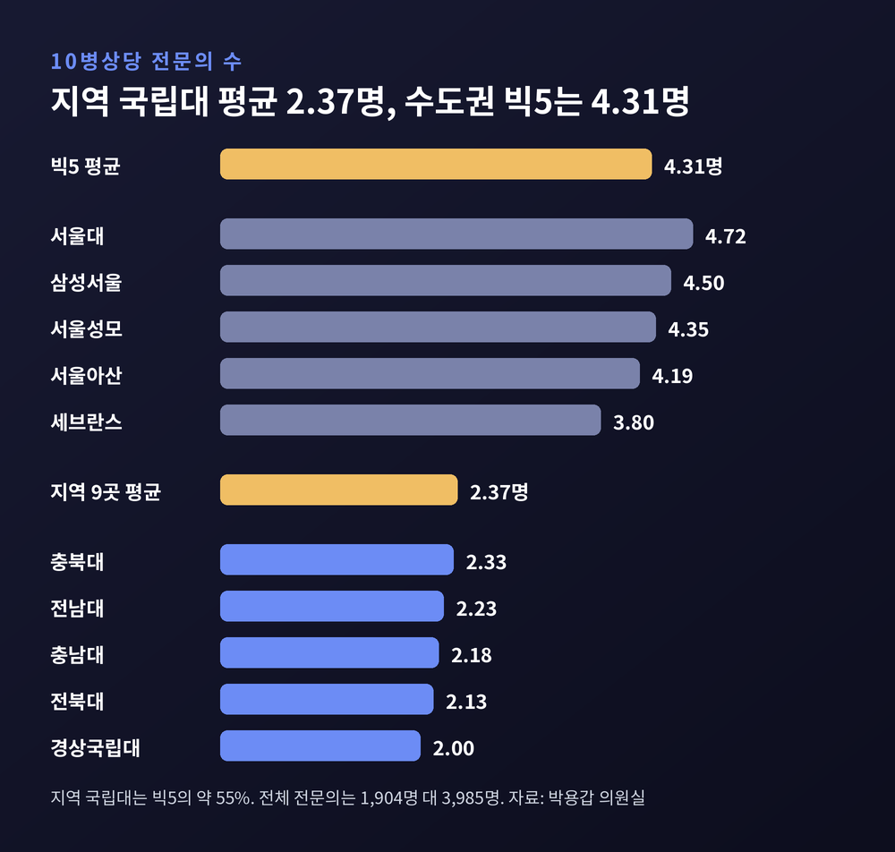
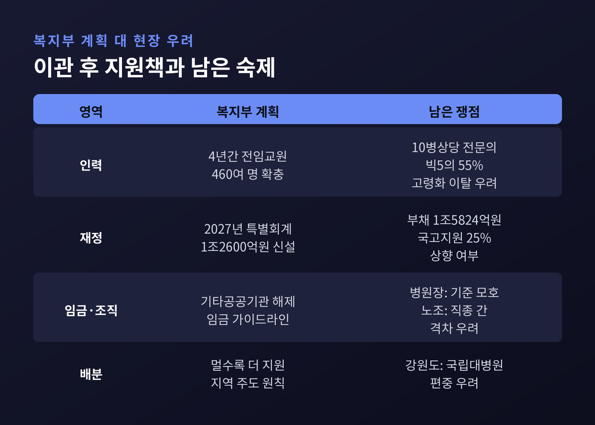
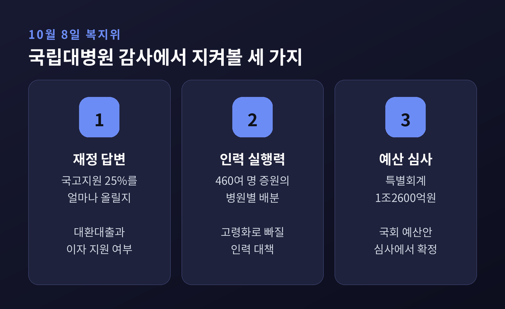

오는 10월 8일 보건복지위원회 국정감사에서 국립대병원이 처음으로 복지부 소관 기관으로 감사를 받습니다. 이번 글에서는 국감 직전에 공개된 부채·인력 자료를 바탕으로 무엇이 쟁점인지 정리해 보겠습니다. 여야 의원들의 입장이 갈리는 대목은 양측 주장을 나란히 적겠습니다.
세 줄 요약
국립대병원 소관은 8월 20일 교육부에서 보건복지부로 넘어왔습니다. 2005년 논의가 시작된 지 21년 만입니다. 국립대학병원 설치법과 국립대학치과병원 설치법 개정이 근거가 됐습니다.
이형훈 복지부 2차관은 이관을 두고 "새로운 출발점"이라고 말했습니다. 복지부는 지역 국립대병원을 수도권 빅5 수준으로 키워 '서울 원정 진료'를 줄이겠다는 구상을 내놓았습니다.
그로부터 한 달 반이 지난 10월 4일, 소병훈 의원(더불어민주당)이 국감을 앞두고 관련 자료를 공개했습니다. 부산대·경북대·충남대 등 지방 국립대병원 9곳의 누적 금융부채가 1조5824억원이라는 내용입니다. 병원별로는 경상국립대 3392억원, 충남대 3215억원, 경북대 2126억원 순입니다. 가장 적은 전남대는 273억원입니다.

숫자의 성격도 눈여겨볼 만합니다. 병원마다 기준 시점이 6월 말에서 8월 말까지 달라 같은 날짜의 비교는 아닙니다. 그래도 방향은 분명합니다. 기사에 따르면 제주대병원은 2023년 778억원에서 1365억원으로 3년여 만에 약 75% 늘었습니다.
빚이 많다는 사실만으로 문제가 되지는 않습니다. 병원은 장비와 건물에 투자하면 빚을 지기 마련입니다. 쟁점은 빚의 구조입니다.
강원대병원은 부채 1440억원 가운데 86%, 약 1240억원이 만기 1년 이내의 단기차입금입니다. 만기가 올 때마다 갚거나 다시 빌려야 하는 구조입니다. 충북대병원은 차입금의 59%인 832억원을 운영자금 한도대출, 이른바 마이너스통장으로 조달했습니다. 인건비와 재료비 같은 운영 자금까지 빚에 기댄다는 뜻입니다. 이자도 늘었습니다. 충북대병원의 연간 이자비용은 2023년 25억원에서 2025년 51억원으로 두 배 넘게 올랐고, 경상국립대병원은 연 105억원, 충남대병원은 연 127억원 규모입니다.
뿌리에는 국고지원 비율이 있습니다. 소 의원이 지적한 바로는 의료시설과 장비에 대한 국고지원은 현행 약 25%이고, 나머지 75%는 병원이 부담합니다. 경상국립대병원이 118억원 규모의 선형가속기를 바꿀 때도 국비는 25%에 그쳤다고 합니다.

소 의원의 요구는 세 가지입니다. 지역필수의료 특별회계의 조속한 신설, 운영자금 차입금의 저리 대환대출과 이자 지원, 국고지원 비율의 대폭 상향입니다. 다만 이번 보도에는 복지부의 직접 답변이 실려 있지 않습니다. 정부 측 해명은 10월 8일 현장에서 확인해야 할 대목입니다.
재정만큼 무거운 문제가 인력입니다. 박용갑 의원(더불어민주당)이 복지부 자료를 분석한 결과, 10병상당 전문의는 지역 국립대 9곳 평균 2.37명, 수도권 빅5 평균 4.31명이었습니다. 지역이 빅5의 약 55%입니다. 전체 전문의 수로 보면 1904명 대 3985명으로 47.8% 수준입니다.
병원별 차이도 큽니다. 경상국립대가 2.0명으로 가장 낮고, 서울대는 4.72명으로 가장 높습니다.
복지부가 내세운 해법은 4년간 전임교원 460여 명 확충입니다. 산부인과·소아과·흉부외과 같은 기피 과목이 중심입니다. 모든 국립대병원에 임상교육훈련센터를 만들고, 국립대병원장을 시·도 필수의료위원회 공동위원장으로 올리겠다는 계획도 있습니다.
그러나 시간표가 문제입니다. 허종식 의원(더불어민주당)의 분석에 따르면 지역의사제로 입학한 학생이 전문의가 되는 시점은 2037년경입니다. 같은 기간 지방 국립대병원 중증 전문인력 가운데 약 28.5%, 100명이 65세 이상에 들어선다는 것이 허 의원 측의 설명입니다. 새 인력이 자라는 동안 숙련 인력이 먼저 빠져나갈 수 있다는 경고입니다. 이 수치는 한 건의 분석이어서 감사 과정에서 정확한 기준을 더 확인할 필요가 있습니다.
지역필수의사제의 성적표도 아직은 아쉽습니다. 박 의원에 따르면 1년간 참여 의사 89명 가운데 지방의료원에 배치된 사람은 2명입니다.

복지부는 2027년 예산안에 지역필수의료 특별회계 1조2600억원을 담았습니다. 코메디닷컴 보도에 따르면 지역의사선발전형 490명 지원, 계약형 지역필수의사 전국 448명 확대, 서울 밖 모자의료센터 전문의에게 월 1000만원 수당 같은 항목이 포함됩니다. 정은경 장관은 "지역·필수·공공의료를 확충"하겠다고 밝혔습니다.
운영 원칙은 "멀수록 더 지원, 공공의료 우선, 지역 주도"입니다. 그런데 배분을 두고 이견이 나옵니다. 강원특별자치도의 공공의료과장은 7월 협의체에서 "권역책임의료기관에서 국립대병원으로 전환된 것에 불과하다"며 지역 의료기관이 함께 참여할 수 있어야 한다고 건의했습니다. 국립대병원 중심 투자가 지역 민간·공공병원을 소외시킬 수 있다는 우려입니다.
또 하나의 이해관계가 임금입니다. 복지부는 기타공공기관 지정 해제를 추진하면서 임금 가이드라인을 제공하겠다고 했습니다. 병원장 측은 협상 기준이 모호해질까 걱정하고, 노조 측은 의사와 다른 직종 사이의 임금 격차가 커질 가능성을 우려했다고 약사공론은 전했습니다.

이번 사안의 구도는 조금 특이합니다. 부채와 인력 부족 자료를 낸 소병훈·박용갑·허종식 의원은 모두 더불어민주당 소속입니다. 여당 의원들이 정부 정책의 후속 재정·인력 대책을 먼저 요구하는 모양새입니다. 민주당은 이번 국감을 "정책·민생 국감"으로 규정하고, 국민의힘의 정쟁화 전략에 휘둘리지 않겠다는 입장입니다.
국민의힘은 국감을 "실정 검증대"로 삼겠다고 합니다. 파이낸셜뉴스는 DMZ 폭발 사고, 검찰청 폐지, 전월세, ETF 등을 야당이 '10대 핵심 정책 실패'로 꼽았다고 전했습니다. 복지위 영역에서는 식약처의 제넨셀 코로나19 치료제 임상승인 과정이 주된 공세 지점입니다. 한지아 의원 등이 자료 제출에 소극적인 식약처를 항의 방문했고, 2021년 당시 식약처에 신속 승인을 요청한 민원 제출자가 김승원 의원이라는 점이 거론됩니다.
국립대병원 이관과 부채에 대한 국민의힘의 구체적 입장은 이번 조사에서 확인하지 못했습니다. 다만 매체들이 공통으로 짚는 올해 국감의 기조는 지난해 의료대란 점검에서 정책의 '실행력과 성과 검증'으로 옮겨 갔다는 것입니다. 이관만 하고 재정을 뒷받침하지 못했다는 비판과, 이제 막 이관된 만큼 시간이 필요하다는 반론이 맞부딪칠 가능성이 있습니다.
복지위 국감은 국립대병원만 다루지 않습니다. 비급여 진료비는 4년 사이 약 40% 늘어 20조원을 넘겼습니다. 정부가 2월 도수치료 등 3개 항목을 관리급여로 묶자 신장분사 같은 다른 비급여로 옮겨 가는 '풍선효과' 우려가 나옵니다. 입법조사처는 2015년 1월부터 2026년 3월까지 진료비 페이백을 적발한 사례가 한 건도 없다고 지적했습니다.
12월 24일 시행되는 비대면진료 본사업도 중요한 의제입니다. 시행령 개정안은 11월 2일까지 입법예고 중입니다. 초진 처방일수와 약 배송 대상은 아직 확정되지 않았습니다. 의료계에서는 초진 처방을 7일 안팎으로 제한하자는 안이 거론되고, 플랫폼 업계는 의사 판단에 맡겨야 한다고 맞섭니다. 약사단체는 9월 20일 서울에서 약 배송 확대 반대 집회를 열었습니다. 권영희 대한약사회장과 정진웅 닥터나우 대표는 증인으로 채택됐습니다.
국감 이후 흐름은 세 갈래로 요약됩니다.

물론 한계도 있습니다. 부채 수치는 병원별 기준 시점이 달라 단순 합산의 정밀도에 한계가 있고, 인력 고령화 분석은 단일 의원실 자료입니다. 복지부의 공식 해명도 아직 나오지 않았습니다. 결론을 서두르기보다 감사장에서 오가는 답변을 확인하는 편이 순서일 것입니다.
끝으로 한 마디만 더 드리겠습니다.
간판을 바꿔 다는 일은 하루면 되지만, 지역 병원의 재정과 인력을 바꾸는 일은 십 년이 걸립니다. 21년 만의 이관이 이름뿐인 변화에 그칠지, 지역 환자가 서울로 가지 않아도 되는 출발점이 될지는 지원의 크기와 속도가 정할 것입니다.
"소관을 옮기는 것보다 어려운 일은, 옮긴 뒤에 책임지는 것이다."
10월 8일 감사장에서 오갈 숫자들이 그 책임의 무게를 가늠하게 해 줄 것입니다. 여야 어느 쪽 주장이든, 지역 의료의 최후 보루라는 말이 숫자로 뒷받침되는지 차분히 지켜보시길 권합니다.